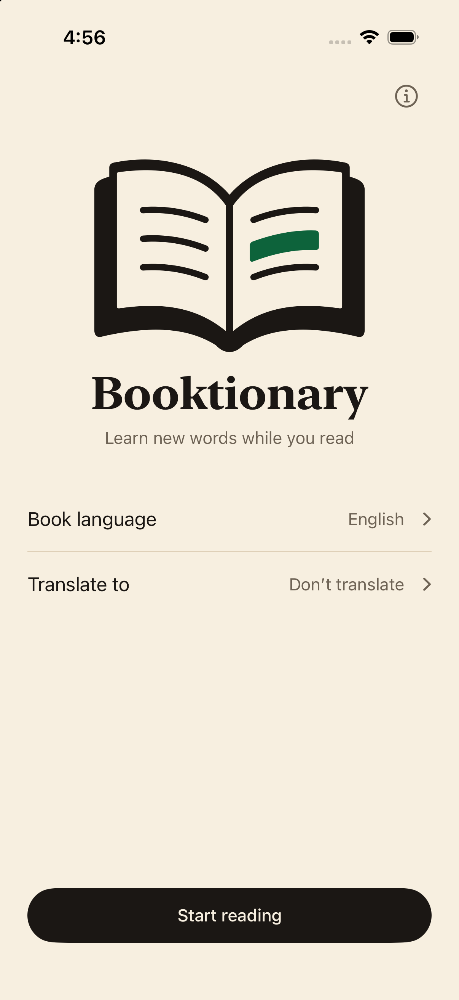
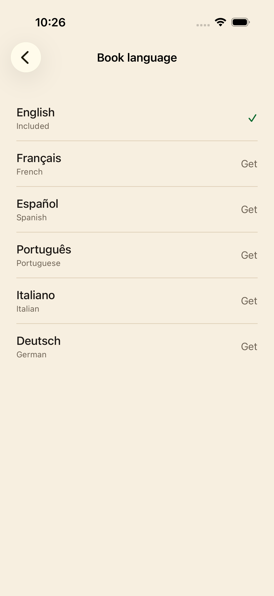

01
Abre el libro y la app.
Elige el idioma del libro y toca Empezar a leer.
Un pequeño compañero para los libros de papel
Una palabra nueva no debería sacarte de un buen libro. Apunta a la página con tu iPhone, descubre su significado y sigue leyendo.
$1.99 USDCompra única. Sin suscripción.
 Menos búsquedas. Más lectura.
Menos búsquedas. Más lectura.Un momento de curiosidad
Sin escribir ni cambiar de app. Una mirada rápida y vuelta al libro.

Elige el idioma del libro y toca Empezar a leer.
Coloca el pequeño círculo verde sobre la palabra durante un segundo. El resaltado confirma la lectura.

Lee la definición y deslízala para cerrarla. La cámara queda lista para otra palabra.
Elige el idioma del libro
El inglés está listo para usar. Descarga los demás diccionarios que necesites.
¿Lees en inglés? Añade traducciones opcionales a cualquiera de los otros cinco idiomas.
Todos los diccionarios y paquetes de traducción disponibles están incluidos en la compra. Los instalados funcionan sin conexión.

Una app más tranquila
Los diccionarios y traducciones instalados funcionan sin internet.
Las imágenes y palabras reconocidas permanecen en tu iPhone. Sin cuenta, publicidad, analíticas ni seguimiento.
Los seis diccionarios y las traducciones disponibles están incluidos. Sin suscripciones ni compras integradas.
Sí. El diccionario inglés está incluido. Descarga los demás diccionarios y traducciones con conexión; después funcionan sin internet. Consultar el catálogo requiere conexión.
Inglés, francés, español, portugués, italiano y alemán. Elige el idioma del libro antes de leer. El inglés está incluido; los otros cinco diccionarios se descargan aparte.
Para libros en inglés puedes añadir traducciones al francés, español, portugués, italiano o alemán. Descarga primero el paquete elegido. La cobertura varía según la palabra. Los otros idiomas muestran definiciones, sin traducción.
Booktionary necesita un iPhone con iOS 17 o posterior. Una buena iluminación facilita el reconocimiento.
No. Las imágenes, palabras y búsquedas permanecen en tu dispositivo. Sin cuentas, anuncios ni analíticas. Las descargas contactan con el servidor, que puede recibir tu dirección IP.
Busca buena iluminación y acerca el teléfono si no reconoce el texto. Elige el idioma del libro antes de empezar. Para comprobar el uso sin conexión, descarga los recursos y prueba una palabra en modo avión.
¿Necesitas ayuda? Escribe a fredddv@hotmail.com indicando el modelo de iPhone, la versión de iOS, el idioma del libro y el problema.
Por amor a los libros de papel
$1.99 USDCompra única. Sin suscripción.
Para iPhone · iOS 17 o posterior